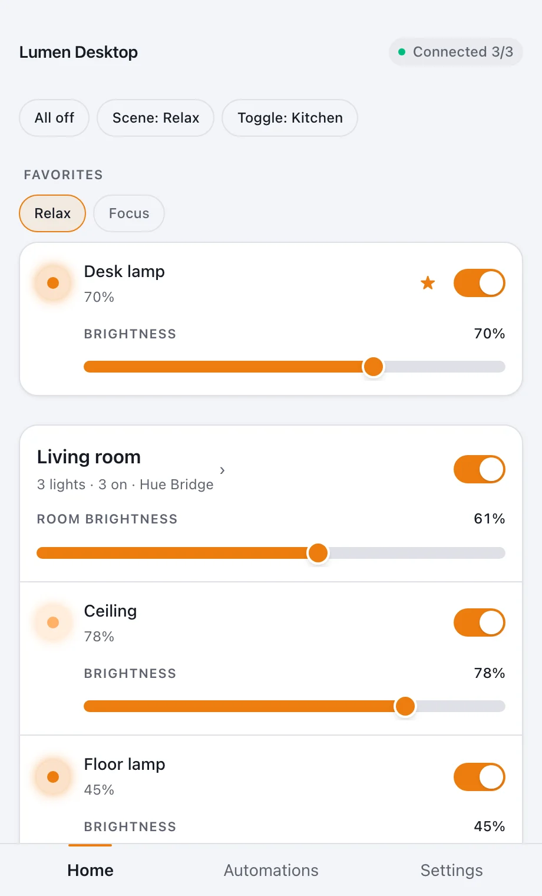
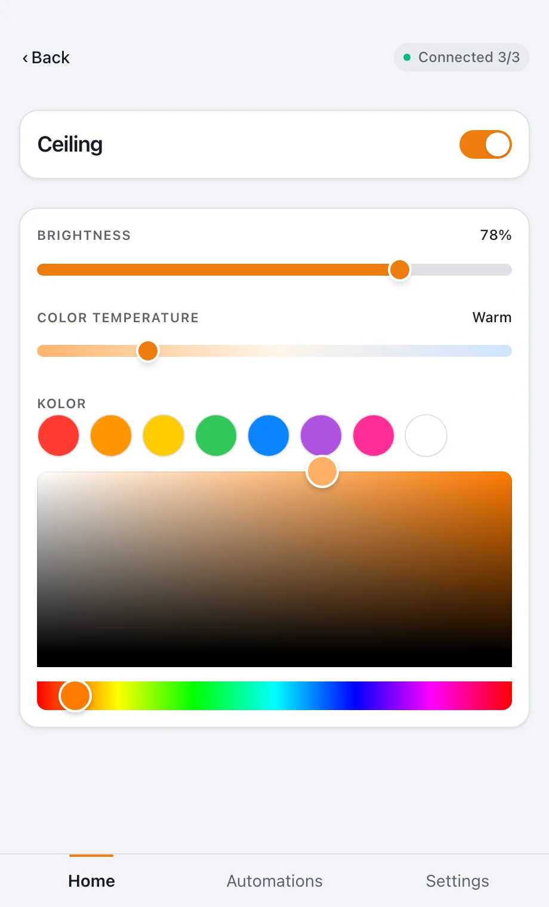
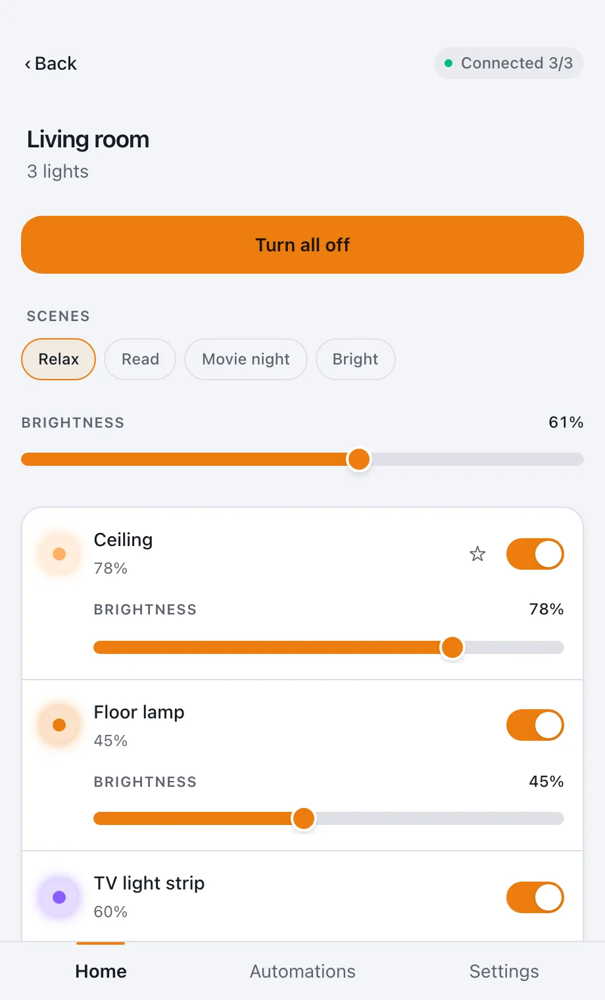
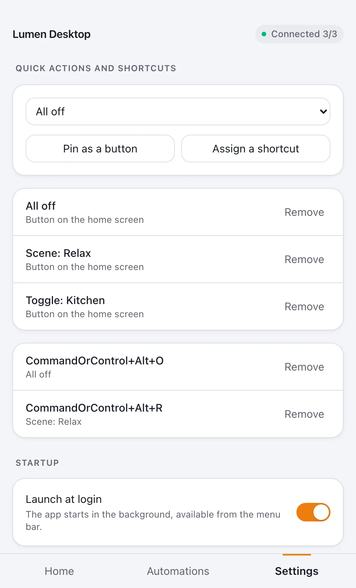
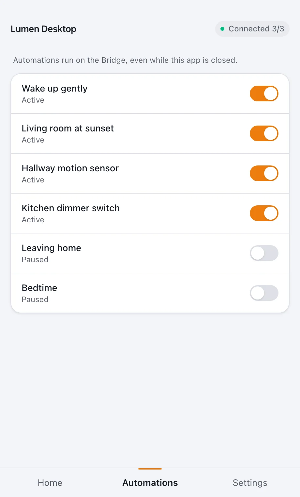
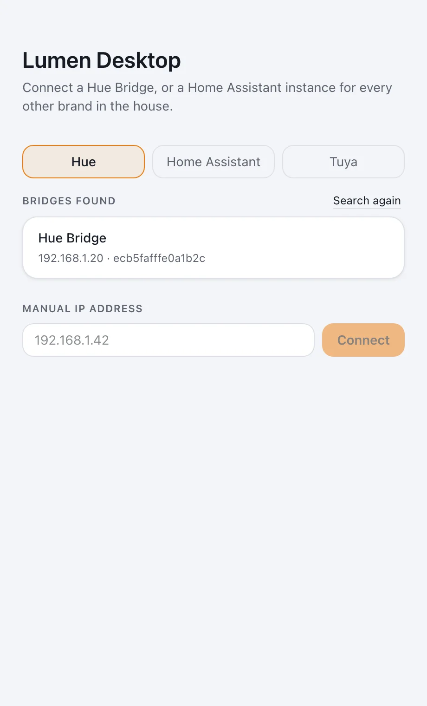
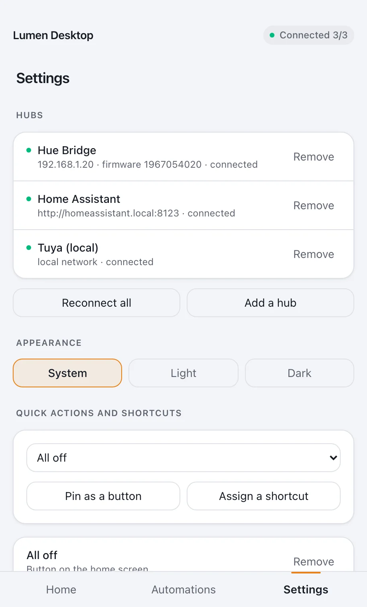

One list instead of three apps
Hue, Tuya and Home Assistant run side by side. Rooms and lights from every hub show up together.
Version 0.4.1 · open source (MIT)
Lumen Desktop is a lightweight desktop app for Philips Hue, Tuya bulbs and anything your Home Assistant can see. One window, the menu bar and keyboard shortcuts — no reaching for your phone, no account, no cloud.
Free. macOS on Apple Silicon — signed and notarized by Apple. Windows and Linux packages are built, but not tested yet.


The problem
Dimming a lamp means unlocking the phone, finding the vendor's app and waiting for it to connect. And if the house has Hue, a few cheaper Tuya bulbs and Home Assistant for everything else, that's three apps for one small job.
Hue, Tuya and Home Assistant run side by side. Rooms and lights from every hub show up together.
The app window, the menu bar, global shortcuts and a macOS widget — change the lights without breaking your flow.
The app talks to devices on your own network. There's no Lumen account or server, and credentials are encrypted by the operating system.
Supported devices
From the most direct: a Hue Bridge, the Tuya bulb itself, or your Home Assistant standing in for every other brand.
Through a Hue Bridge v2 on your local network. The app finds the Bridge on its own — via mDNS, Hue's discovery service or an IP address you type in — and you confirm pairing with the button on the Bridge.
Hue API v2 · live updatesStraight to the bulb over your LAN — including brands that never mention they're Tuya underneath, such as Spectrum Smart. You fetch a local key once; after that the cloud is never used again.
Protocol 3.3 · works offlineEverything else. If Home Assistant can see a light, so can Lumen — all it takes is the address and a long-lived token. Home Assistant areas become rooms.
WebSocket · any brand in HAFeatures
Rooms with their lights, scenes and favorites in one place. Switch, dim, move on. Changes made with a wall switch, the vendor's app or your voice assistant show up instantly.

Turn a room on or off, set every light's brightness at once, or pick a scene saved on the hub. The room gets one grouped command instead of one per bulb.
You only see what a bulb can actually do. A plain white bulb gets a power switch, White Ambiance adds color temperature, and a color bulb gets the full picker.

Bind a global keyboard shortcut to a scene, a room or “all off” — it works even while the app is in the background. From the menu bar you control your favorites without opening the window.

See the automations saved on your hub — a wake-up routine, a motion sensor, a dimmer switch — and pause one with a single toggle when it gets in the way. They run on the hub, so they keep working with the app closed.
Small and medium sizes, in Notification Center and on the desktop. Switches lights even with the app closed. Requires macOS 14.
Each hub connects independently, so when one goes quiet the others carry on.
After a dropped connection the app keeps retrying, and if your router hands the Hue Bridge a new address, it finds it again by its ID.
Follow the system or pick one for good — your choice in the app's settings.
How it works
Grab the .dmg from the latest GitHub release and drag Lumen Desktop into your Applications folder.
Choose Hue, Home Assistant or Tuya. The Hue Bridge is found automatically — just press its button. Home Assistant needs its address and a token; Tuya needs each device's local key.

From the app window, the menu bar, a keyboard shortcut or the widget. Add more hubs any time in settings.

Gallery
Screenshots of the real app, filled with made-up data. The light or dark theme follows your system settings.
Privacy and security
Before you download
For developers
The interface knows nothing about HTTPS, tokens or vendor formats — only lights, rooms and
hubs. Supporting another brand means one ProviderAdapter implementation in
src/main/providers/, with no change to the UI.
git clone https://github.com/jash90/lumen-desktop.git
cd lumen-desktop
npm install
npm start # development mode
npm test # tests (Vitest)
npm run typecheck # TypeScript, strict mode
npm run make # installers into out/makeFree, no account, no cloud. Connect your first hub in a few minutes.